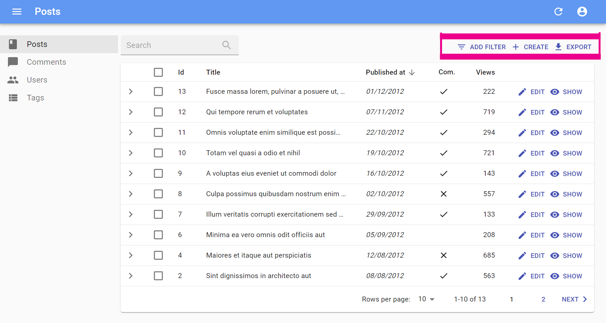

The List View
The List view displays a list of records fetched from the API. The entry point for this view is the <List> component, which takes care of fetching the data. Then, it puts that data in a ListContext so that it’s available for its descendants - usually <Datagrid>, which then delegates the rendering of each record property to <Field> components.
The <List> Component
The <List> component fetches the list of records from the data provider, and renders the list layout (title, buttons, filters, pagination). It delegates the rendering of the list of records to its child component. Usually, it’s a <Datagrid>, responsible for displaying a table with one row for each post.
Here are all the props accepted by the <List> component:
titleactionsexporterbulkActionButtonsfilters(a React element used to display the filter form)filterDefaultValues(the default values foralwaysOnfilters)perPagesortfilter(the permanent filter used in the REST request)paginationasideempty
Here is the minimal code necessary to display a list of posts:
// in src/App.js
import * as React from "react";
import { Admin, Resource } from 'react-admin';
import jsonServerProvider from 'ra-data-json-server';
import { PostList } from './posts';
const App = () => (
<Admin dataProvider={jsonServerProvider('https://jsonplaceholder.typicode.com')}>
<Resource name="posts" list={PostList} />
</Admin>
);
export default App;
// in src/posts.js
import * as React from "react";
import { List, Datagrid, TextField } from 'react-admin';
export const PostList = (props) => (
<List {...props}>
<Datagrid>
<TextField source="id" />
<TextField source="title" />
<TextField source="body" />
</Datagrid>
</List>
);
That’s enough to display the post list:
Page Title
The default title for a list view is “[resource] list” (e.g. “Posts list”). Use the title prop to customize the List view title:
// in src/posts.js
export const PostList = (props) => (
<List {...props} title="List of posts">
...
</List>
);
The title can be either a string or an element of your own.
Actions

You can replace the list of default actions by your own element using the actions prop:
import * as React from 'react';
import { cloneElement, useMemo } from 'react';
import PropTypes from 'prop-types';
import {
useListContext,
TopToolbar,
CreateButton,
ExportButton,
Button,
sanitizeListRestProps,
} from 'react-admin';
import IconEvent from '@material-ui/icons/Event';
const ListActions = (props) => {
const {
className,
exporter,
filters,
maxResults,
...rest
} = props;
const {
currentSort,
resource,
displayedFilters,
filterValues,
hasCreate,
basePath,
selectedIds,
showFilter,
total,
} = useListContext();
return (
<TopToolbar className={className} {...sanitizeListRestProps(rest)}>
{filters && cloneElement(filters, {
resource,
showFilter,
displayedFilters,
filterValues,
context: 'button',
})}
<CreateButton basePath={basePath} />
<ExportButton
disabled={total === 0}
resource={resource}
sort={currentSort}
filterValues={filterValues}
maxResults={maxResults}
/>
{/* Add your custom actions */}
<Button
onClick={() => { alert('Your custom action'); }}
label="Show calendar"
>
<IconEvent />
</Button>
</TopToolbar>
);
};
export const PostList = (props) => (
<List {...props} actions={<ListActions />}>
...
</List>
);
You can also use such a custom <ListActions> component to omit or reorder buttons based on permissions. Just pass the permissions down from the List component:
export const PostList = ({ permissions, ...props }) => (
<List {...props} actions={<PostActions permissions={permissions} {...props} />}>
...
</List>
);
Exporter

Among the default list actions, react-admin includes an <ExportButton>. This button is disabled when there is no record in the current <List>.
By default, clicking this button will:
- Call the
dataProviderwith the current sort and filter (but without pagination), - Transform the result into a CSV string,
- Download the CSV file.
The columns of the CSV file match all the fields of the records in the dataProvider response. That means that the export doesn’t take into account the selection and ordering of fields in your <List> via Field components. If you want to customize the result, pass a custom exporter function to the <List>. This function will receive the data from the dataProvider (after step 1) and replace steps 2-3 (i.e. it’s in charge of transforming, converting, and downloading the file).
Tip: For CSV conversion, you can import jsonexport, a CSV to JSON converter which is already a react-admin dependency. And for CSV download, take advantage of react-admin’s downloadCSV function.
Here is an example for a Posts exporter, omitting, adding, and reordering fields:
// in PostList.js
import { List, downloadCSV } from 'react-admin';
import jsonExport from 'jsonexport/dist';
const exporter = posts => {
const postsForExport = posts.map(post => {
const { backlinks, author, ...postForExport } = post; // omit backlinks and author
postForExport.author_name = post.author.name; // add a field
return postForExport;
});
jsonExport(postsForExport, {
headers: ['id', 'title', 'author_name', 'body'] // order fields in the export
}, (err, csv) => {
downloadCSV(csv, 'posts'); // download as 'posts.csv` file
});
};
const PostList = props => (
<List {...props} exporter={exporter}>
...
</List>
)
In many cases, you’ll need more than simple object manipulation. You’ll need to augment your objects based on relationships. For instance, the export for comments should include the title of the related post - but the export only exposes a post_id by default. For that purpose, the exporter receives a fetchRelatedRecords function as the second parameter. It fetches related records using your dataProvider.getMany() method and returns a promise.
Here is an example for a Comments exporter, fetching related Posts:
// in CommentList.js
import { List, downloadCSV } from 'react-admin';
import jsonExport from 'jsonexport/dist';
const exporter = (records, fetchRelatedRecords) => {
// will call dataProvider.getMany('posts', { ids: records.map(record => record.post_id) }), ignoring duplicate and empty post_id
fetchRelatedRecords(records, 'post_id', 'posts').then(posts => {
const data = records.map(record => ({
...record,
post_title: posts[record.post_id].title,
}));
jsonExport(data, {
headers: ['id', 'post_id', 'post_title', 'body'],
}, (err, csv) => {;
downloadCSV(csv, 'comments');
});
});
};
const CommentList = props => (
<List {...props} exporter={exporter}>
...
</List>
)
Tip: If you need to call another verb in the exporter, take advantage of the third parameter passed to the function: it’s the dataProvider function.
Tip: The <ExportButton> limits the main request to the dataProvider to 1,000 records. If you want to increase or decrease this limit, pass a maxResults prop to the <ExportButton> in a custom <ListActions> component, as explained in the previous section.
Tip: React-admin also provides a <BulkExportButton> component that depends on the exporter, and that you can use in the bulkActionButtons prop of the <List> component.
Tip: For complex (or large) exports, fetching all the related records and assembling them client-side can be slow. In that case, create the CSV on the server side, and replace the <ExportButton> component by a custom one, fetching the CSV route.
Tip: You may also remove the <ExportButton> by passing false to the exporter prop: exporter={false}
Tip: Looking for an <ImportButton>? React-admin doesn’t provide this feature, but the community has an excellent third-party module for CSV import: benwinding/react-admin-import-csv.
Bulk Action Buttons

Bulk action buttons are buttons that affect several records at once, like mass deletion for instance. In the <Datagrid> component, the bulk actions toolbar appears when a user ticks the checkboxes in the first column of the table. The user can then choose a button from the bulk actions toolbar. By default, all list views have a single bulk action button, the bulk delete button. You can add other bulk action buttons by passing a custom element as the bulkActionButtons prop of the <List> component:
import * as React from 'react';
import { Fragment } from 'react';
import Button from '@material-ui/core/Button';
import { BulkDeleteButton } from 'react-admin';
import ResetViewsButton from './ResetViewsButton';
const PostBulkActionButtons = props => (
<Fragment>
<ResetViewsButton label="Reset Views" {...props} />
{/* default bulk delete action */}
<BulkDeleteButton {...props} />
</Fragment>
);
export const PostList = (props) => (
<List {...props} bulkActionButtons={<PostBulkActionButtons />}>
...
</List>
);
Tip: React-admin provides 2 components that you can use in bulkActionButtons: <BulkDeleteButton>, and <BulkExportButton>.
Tip: You can also disable bulk actions altogether by passing false to the bulkActionButtons prop. When using a Datagrid inside a List with disabled bulk actions, the checkboxes column won’t be added.
Bulk action button components receive several props allowing them to perform their job:
resource: the currently displayed resource (egposts,comments, etc.)basePath: the current router base path for the resource (eg/posts,/comments, etc.)filterValues: the filter values. This can be useful if you want to apply your action on all items matching the filter.selectedIds: the identifiers of the currently selected items.
Here is an example leveraging the useUpdateMany hook, which sets the views property of all posts to 0:
// in ./ResetViewsButton.js
import * as React from "react";
import {
Button,
useUpdateMany,
useRefresh,
useNotify,
useUnselectAll,
} from 'react-admin';
import { VisibilityOff } from '@material-ui/icons';
const ResetViewsButton = ({ selectedIds }) => {
const refresh = useRefresh();
const notify = useNotify();
const unselectAll = useUnselectAll();
const [updateMany, { loading }] = useUpdateMany(
'posts',
selectedIds,
{ views: 0 },
{
onSuccess: () => {
refresh();
notify('Posts updated');
unselectAll('posts');
},
onFailure: error => notify('Error: posts not updated', 'warning'),
}
);
return (
<Button
label="simple.action.resetViews"
disabled={loading}
onClick={updateMany}
>
<VisibilityOff />
</Button>
);
};
export default ResetViewsButton;
But most of the time, bulk actions are mini-applications with a standalone user interface (in a Dialog). Here is the same ResetViewsAction implemented behind a confirmation dialog:
// in ./ResetViewsButton.js
import * as React from 'react';
import { Fragment, useState } from 'react';
import {
Button,
Confirm,
useUpdateMany,
useRefresh,
useNotify,
useUnselectAll,
} from 'react-admin';
const ResetViewsButton = ({ selectedIds }) => {
const [open, setOpen] = useState(false);
const refresh = useRefresh();
const notify = useNotify();
const unselectAll = useUnselectAll();
const [updateMany, { loading }] = useUpdateMany(
'posts',
selectedIds,
{ views: 0 },
{
onSuccess: () => {
refresh();
notify('Posts updated');
unselectAll('posts');
},
onFailure: error => notify('Error: posts not updated', 'warning'),
}
);
const handleClick = () => setOpen(true);
const handleDialogClose = () => setOpen(false);
const handleConfirm = () => {
updateMany();
setOpen(false);
};
return (
<Fragment>
<Button label="Reset Views" onClick={handleClick} />
<Confirm
isOpen={open}
loading={loading}
title="Update View Count"
content="Are you sure you want to reset the views for these items?"
onConfirm={handleConfirm}
onClose={handleDialogClose}
/>
</Fragment>
);
}
export default ResetViewsButton;
Tip: <Confirm> leverages material-ui’s <Dialog> component to implement a confirmation popup. Feel free to use it in your admins!
Tip: <Confirm> text props such as title and content are translatable. You can pass use translation keys in these props.
Tip: You can customize the text of the two <Confirm> component buttons using the cancel and confirm props which accept translation keys. You can customize the icons by setting the ConfirmIcon and CancelIcon props, which accept a SvgIcon type.
Tip: React-admin doesn’t use the <Confirm> component internally, because deletes and updates are applied locally immediately, then dispatched to the server after a few seconds, unless the user chooses to undo the modification. That’s what we call optimistic rendering. You can do the same for the ResetViewsButton by setting undoable: true in the last argument of useUpdateMany(), as follows:
// in ./ResetViewsButton.js
import * as React from "react";
import {
Button,
Confirm,
useUpdateMany,
useRefresh,
useNotify,
useUnselectAll,
} from 'react-admin';
import { VisibilityOff } from '@material-ui/icons';
const ResetViewsButton = ({ selectedIds }) => {
const refresh = useRefresh();
const notify = useNotify();
const unselectAll = useUnselectAll();
const [updateMany, { loading }] = useUpdateMany(
'posts',
selectedIds,
{ views: 0 },
{
onSuccess: () => {
refresh();
- notify('Posts updated');
+ notify('Posts updated', 'info', '{}, true); // the last argument forces the display of 'undo' in the notification
unselectAll('posts');
},
onFailure: error => notify('Error: posts not updated', 'warning'),
+ undoable: true
}
);
return (
<Button
label="simple.action.resetViews"
disabled={loading}
onClick={updateMany}
>
<VisibilityOff />
</Button>
);
};
Filters

You can add a filter component to the list using the filters prop:
const PostFilter = (props) => (
<Filter {...props}>
<TextInput label="Search" source="q" alwaysOn />
<TextInput label="Title" source="title" defaultValue="Hello, World!" />
</Filter>
);
export const PostList = (props) => (
<List {...props} filters={<PostFilter />}>
...
</List>
);
The filter component must be a <Filter> with <Input> children.
Tip: Don’t mix up this filters prop, expecting a React element, with the filter props, which expects an object to define permanent filters (see below).
Children of the <Filter> form are regular inputs. <Filter> hides them all by default, except those that have the alwaysOn prop.
For more details about the filters prop, see the Filtering the List section below.
Filter Default Values
To set default values to filters, you can either pass an object literal as the filterDefaultValues prop of the <List> element, or use the defaultValue prop of any input component.
There is one exception: inputs with alwaysOn don’t accept defaultValue. You have to use the filterDefaultValues for those.
// in src/posts.js
const PostFilter = (props) => (
<Filter {...props}>
<TextInput label="Search" source="q" alwaysOn />
<BooleanInput source="is_published" alwaysOn />
<TextInput source="title" defaultValue="Hello, World!" />
</Filter>
);
export const PostList = (props) => (
<List {...props} filters={<PostFilter />} filterDefaultValues={{ is_published: true }}>
...
</List>
);
Tip: The filter and filterDefaultValues props have one key difference: the filterDefaultValues can be overridden by the user, while the filter values are always sent to the data provider. Or, to put it otherwise:
const filterSentToDataProvider = { ...filterDefaultValues, ...filterChosenByUser, ...filter };
Records Per Page
By default, the list paginates results by groups of 10. You can override this setting by specifying the perPage prop:
// in src/posts.js
export const PostList = (props) => (
<List {...props} perPage={25}>
...
</List>
);
Default Sort Field
Pass an object literal as the sort prop to determine the default field and order used for sorting:
// in src/posts.js
export const PostList = (props) => (
<List {...props} sort={{ field: 'published_at', order: 'DESC' }}>
...
</List>
);
sort defines the default sort order ; the list remains sortable by clicking on column headers.
For more details on list sort, see the Sorting The List section below.
Permanent Filter
You can choose to always filter the list, without letting the user disable this filter - for instance to display only published posts. Write the filter to be passed to the data provider in the filter props:
// in src/posts.js
export const PostList = (props) => (
<List {...props} filter={{ is_published: true }}>
...
</List>
);
The actual filter parameter sent to the data provider is the result of the combination of the user filters (the ones set through the filters component form), and the permanent filter. The user cannot override the permanent filters set by way of filter.
Pagination
The pagination prop allows to replace the default pagination controls by your own.
// in src/MyPagination.js
import { Pagination, List } from 'react-admin';
const PostPagination = props => <Pagination rowsPerPageOptions={[10, 25, 50, 100]} {...props} />;
export const PostList = (props) => (
<List {...props} pagination={<PostPagination />}>
...
</List>
);
See Paginating the List below for details.
Aside component
You may want to display additional information on the side of the list. Use the aside prop for that, passing the component of your choice:
const Aside = () => (
<div style={{ width: 200, margin: '1em' }}>
<Typography variant="h6">Post details</Typography>
<Typography variant="body2">
Posts will only be published one an editor approves them
</Typography>
</div>
);
const PostList = props => (
<List aside={<Aside />} {...props}>
...
</List>
);
The aside component can call the useListContext() hook to receive the same props as the List child component, including the following:
basePath,currentSort,data,defaultTitle,filterValues,ids,page,perPage,resource,selectedIds,total,version,
That means you can display additional details of the current list in the aside component:
const Aside = () => {
const { data, ids } = useListContext();
return (
<div style={{ width: 200, margin: '1em' }}>
<Typography variant="h6">Posts stats</Typography>
<Typography variant="body2">
Total views: {ids.map(id => data[id]).reduce((sum, post) => sum + post.views, 0)}
</Typography>
</div>
);
};
Empty page
When there is no result, and there is no active filter, and the resource has a create page, react-admin displays a special page inviting the user to create the first record.
You can use the empty prop to replace that page by a custom component:
import Box from '@material-ui/core/Box';
import Button from '@material-ui/core/Button';
import Typography from '@material-ui/core/Typography';
import { CreateButton, List, useListContext } from 'react-admin';
const Empty = () => {
const { basePath, resource } = useListContext();
return (
<Box textAlign="center" m={1}>
<Typography variant="h4" paragraph>
No products available
</Typography>
<Typography variant="body1">
Create one or import from a file
</Typography>
<CreateButton basePath={basePath} />
<Button onClick={/* ... */}>Import</Button>
</Box>
);
};
const ProductList = props => (
<List empty={<Empty />} {...props}>
...
</List>
);
The empty component can call the useListContext() hook to receive the same props as the List child component, including the following:
basePath,currentSort,data,defaultTitle,filterValues,ids,page,perPage,resource,selectedIds,total,version,
You can also set the empty props value to false to bypass the empty page display and render an empty list instead.
import { List } from 'react-admin';
const ProductList = props => (
<List empty={false} {...props}>
...
</List>
);
Component
By default, the List view renders the main content area inside a material-ui <Card> element. The actual layout of the list depends on the child component you’re using (<Datagrid>, <SimpleList>, or a custom layout component).
Some List layouts display each record in a <Card>, in which case the user ends up seeing a card inside a card, which is bad UI. To avoid that, you can override the main area container by passing a component prop:
// use a div as root component
const PostList = props => (
<List component="div" {...props}>
...
</List>
);
// use a custom component as root component
const PostList = props => (
<List component={MyComponent} {...props}>
...
</List>
);
The default value for the component prop is Card.
CSS API
The List component accepts the usual className prop but you can override many class names injected to the inner components by React-admin thanks to the classes property (as most Material UI components, see their documentation about it). This property accepts the following keys:
root: alternative to usingclassName. Applied to the root element.actions: applied to the actions containermain: applied to the main containernoResults: applied to the component shown when there is no result
You can customize the list styles by passing a classes object as prop, through useStyles(). Here is an example:
import { makeStyles } from '@material-ui/core';
const useStyles = makeStyles({
header: {
backgroundColor: '#ccc',
},
});
const PostList = props => {
const classes = useStyles();
return (
<List {...props} classes={{ header: classes.header }}>
<Datagrid>
...
</Datagrid>
</List>
);
}
export default PostList;
Filtering The List
|
|

|
One of the most important features of the List page is the ability to filter the results. React-admin does its best to offer a powerful filter functionality, and to get out of the way when you want to go further.
The next sections explain hows to use the filter functionality. And first, a few explanations about the inner workings of filters:
React-admin proposes several UI components to let users see and modify filters, and gives you the tools to build custom ones.
- The
<Filter>Button/Form Combo - The
<FilterList>Sidebar - Building A Custom Filter
Filter Query Parameter
React-admin uses the filter query parameter from the URL to determine the filters to apply to the list. To change the filters, react-admin simply changes this filter query parameter, and the <List> components fetches dataProvider.getList() again with the new filters.
Here is a typical List URL:
https://myadmin.dev/#/posts?displayedFilters=%7B%22commentable%22%3Atrue%7D&filter=%7B%22commentable%22%3Atrue%2C%22q%22%3A%22lorem%20%22%7D&order=DESC&page=1&perPage=10&sort=published_at
Once decoded, the filter query parameter reveals as a JSON value:
filter={"commentable":true,"q":"lorem "}
You can change the filters by updating the query parameter, e.g. using the <Link> component or the history.push() method from react-router.
Tip: Once a user sets a filter, react-admin persists the filter value in the application state, so that when the user comes back to the list, they should see the filtered list. That’s a design choice.
Linking To A Pre-Filtered List
As the filter values are taken from the URL, you can link to a pre-filtered list by setting the query parameter.
For instance, if you have a list of tags, you can display a button for each category to link to the list of posts filtered by that tag:
import * as React from "react";
import Button from '@material-ui/core/Button';
import { Link } from 'react-router-dom';
import { stringify } from 'query-string';
const LinkToRelatedProducts = ({ record }) => {
const translate = useTranslate();
return record ? (
<Button
color="primary"
component={Link}
to={{
pathname: '/posts',
search: stringify({
page: 1,
perPage: 25,
sort: 'id',
order: 'DESC',
filter: JSON.stringify({ category_id: record.id }),
}),
}}
>
All posts with the category {record.name} ;
</Button>
) : null;
};
You can use this button e.g. as a child of <Datagrid>. You can also create a custom Menu button with that technique to link to the unfiltered list by setting the filter value to {}.
Tip: You have to pass all the query string parameters - not just filter. That’s a current limitation of react-admin.
The <Filter> Button/Form Combo
The default appearance for filters is an inline form displayed on top of the list. Users also see a dropdown button allowing to add more inputs to that form. This functionality relies on the <Filter> component:
import { Filter, TextInput } from 'react-admin';
const PostFilter = (props) => (
<Filter {...props}>
<TextInput label="Search" source="q" alwaysOn />
<TextInput label="Title" source="title" defaultValue="Hello, World!" />
</Filter>
);
Children of the <Filter> component are regular inputs. That means you can build sophisticated filters based on references, array values, etc. <Filter> hides all inputs in the filter form by default, except those that have the alwaysOn prop.
Tip: For technical reasons, react-admin does not accept children of <Filter> having both a defaultValue and alwaysOn. To set default values for always on filters, use the filterDefaultValues prop of the component instead.
To inject the filter form in a <List>, use the filters prop:
export const PostList = (props) => (
<List {...props} filters={<PostFilter />}>
...
</List>
);
<List> clones the component passed as filters twice:
- once with the prop
context="form", to render the filter form - once with the prop
context="button", to render the filter button
The component passed as filters should know how to render differently according to the context prop.
That’s the case of the react-admin <Filter> component:
<Filter context="form">renders an inline form based on its children which must be<Input>components<Filter context="button">renders a dropdown allowing enabling filters based on thesourceprop of its children.
Full-Text Search

In addition to the usual input types (<TextInput>, <SelectInput>, <ReferenceInput>, etc.), you can use the <SearchInput>, which is designed especially for the filter form. It’s like a <TextInput resettable> with a magnifier glass icon - exactly the type of input users look for when they want to do a full-text search.
import { Filter, SearchInput, TextInput } from 'react-admin';
const PostFilter = props => (
<Filter {...props}>
<SearchInput source="q" alwaysOn />
</Filter>
);
In the example given above, the q filter triggers a full-text search on all fields. It’s your responsibility to implement the full-text filtering capabilities in your dataProvider, or in your API.
Quick Filters
Users usually dislike using their keyboard to filter a list (especially on mobile). A good way to satisfy this user requirement is to turn filters into quick filter. A Quick filter is a filter with a non-editable defaultValue. Users can only enable or disable them.
Here is how to implement a generic <QuickFilter> component:
import { Filter, SearchInput } from 'react-admin';
import { makeStyles, Chip } from '@material-ui/core';
const useQuickFilterStyles = makeStyles(theme => ({
chip: {
marginBottom: theme.spacing(1),
},
}));
const QuickFilter = ({ label }) => {
const translate = useTranslate();
const classes = useQuickFilterStyles();
return <Chip className={classes.chip} label={translate(label)} />;
};
const PostFilter = props => (
<Filter {...props}>
<SearchInput source="q" alwaysOn />
<QuickFilter source="commentable" label="Commentable" defaultValue={true} />
<QuickFilter source="views_lte" label="Low views" defaultValue={150} />
<QuickFilter source="tags" label="Tagged Code" defaultValue={[3]} />
</Filter>
);
Tip: It’s currently not possible to use two quick filters for the same source.
The <FilterList> Sidebar
An alternative UI to the <Filter> Button/Form Combo is the FilterList Sidebar. Similar to what users usually see on e-commerce websites, it’s a panel with many simple filters that can be enabled and combined using the mouse. The user experience is better than the Button/Form Combo, because the filter values are explicit, and it doesn’t require typing anything in a form. But it’s a bit less powerful, as only filters with a finite set of values (or intervals) can be used in the <FilterList>.
The <FilterList> component expects a list of <FilterListItem> as children. Each <FilterListItem> defines a filter label and a value, which is merged with the current filter value when enabled by the user. Here is an example usage for a list of customers:
import * as React from 'react';
import AccessTimeIcon from '@material-ui/icons/AccessTime';
import MonetizationOnIcon from '@material-ui/icons/MonetizationOnOutlined';
import MailIcon from '@material-ui/icons/MailOutline';
import LocalOfferIcon from '@material-ui/icons/LocalOfferOutlined';
import { FilterList, FilterListItem } from 'react-admin';
import {
endOfYesterday,
startOfWeek,
subWeeks,
startOfMonth,
subMonths,
} from 'date-fns';
import segments from '../segments/data';
const LastVisitedFilter = () => (
<FilterList label="Last visited" icon={<AccessTimeIcon />}>
<FilterListItem
label="Today"
value={{
last_seen_gte: endOfYesterday().toISOString(),
last_seen_lte: undefined,
}}
/>
<FilterListItem
label="This week"
value={{
last_seen_gte: startOfWeek(new Date()).toISOString(),
last_seen_lte: undefined,
}}
/>
<FilterListItem
label="Last week"
value={{
last_seen_gte: subWeeks(startOfWeek(new Date()), 1).toISOString(),
last_seen_lte: startOfWeek(new Date()).toISOString(),
}}
/>
<FilterListItem
label="This month"
value={{
last_seen_gte: startOfMonth(new Date()).toISOString(),
last_seen_lte: undefined,
}}
/>
<FilterListItem
label="Last month"
value={{
last_seen_gte: subMonths(startOfMonth(new Date()),1).toISOString(),
last_seen_lte: startOfMonth(new Date()).toISOString(),
}}
/>
<FilterListItem
label="Earlier"
value={{
last_seen_gte: undefined,
last_seen_lte: subMonths(startOfMonth(new Date()),1).toISOString(),
}}
/>
</FilterList>
);
const HasOrderedFilter = () => (
<FilterList
label="Has ordered"
icon={<MonetizationOnIcon />}
>
<FilterListItem
label="True"
value={{
nb_commands_gte: 1,
nb_commands_lte: undefined,
}}
/>
<FilterListItem
label="False"
value={{
nb_commands_gte: undefined,
nb_commands_lte: 0,
}}
/>
</FilterList>
);
const HasNewsletterFilter = () => (
<FilterList
label="Has newsletter"
icon={<MailIcon />}
>
<FilterListItem
label="True"
value={{ has_newsletter: true }}
/>
<FilterListItem
label="False"
value={{ has_newsletter: false }}
/>
</FilterList>
);
const SegmentFilter = () => (
<FilterList
label="Segment"
icon={<LocalOfferIcon />}
>
{segments.map(segment => (
<FilterListItem
label={segment.name}
key={segment.id}
value={{ groups: segment.id }}
/>
))}
</FilterList>
);
You can place these <FilterList> anywhere inside a <List>. The most common case is to put them in a sidebar that is on the left hand side of the datagrid. You can use the aside property for that:
import * as React from 'react';
import { Card as MuiCard, CardContent, withStyles } from '@material-ui/core';
import { LastVisitedFilter, HasOrderedFilter, HasNewsletterFilter, SegmentFilter } from './filters';
const Card = withStyles(theme => ({
root: {
[theme.breakpoints.up('sm')]: {
order: -1, // display on the left rather than on the right of the list
width: '15em',
marginRight: '1em',
},
[theme.breakpoints.down('sm')]: {
display: 'none',
},
},
}))(MuiCard);
const FilterSidebar = () => (
<Card>
<CardContent>
<LastVisitedFilter />
<HasOrderedFilter />
<HasNewsletterFilter />
<SegmentFilter />
</CardContent>
</Card>
);
const CustomerList = props => (
<List aside={<FilterSidebar />}>
// ...
</List>
)
Tip: The <FilterList> Sidebar is not a good UI for small screens. You can choose to hide it on small screens (as in the previous example). A good tradeoff is to use <FilterList> on large screens, and the <Filter> Button/Form combo on Mobile.
Live Search

The filter sidebar is not a form. Therefore, if your users need to enter complex filters, you’ll have to recreate a filter form using react-final-form (see the Filter on submit section below for an example). However, if you only need one text input with a filter-as-you-type behavior, you’ll find the <FilterLiveSearch> component convenient.
It outputs a form containing a single <SearchInput>, which modifies the page filter on change. That’s usually what users expect for a full-text filter. <FilterLiveSearch> only needs a source field.
So for instance, to add a search filter on the customer full name, add the following line to the Sidebar:
+import { FilterLiveSearch } from 'react-admin';
const FilterSidebar = () => (
<Card>
<CardContent>
+ <FilterLiveSearch source="full_name" />
<LastVisitedFilter />
<HasOrderedFilter />
<HasNewsletterFilter />
<SegmentFilter />
</CardContent>
</Card>
);
Building a Custom Filter

If neither the <Filter> button/form combo or the <FilterList> sidebar match your need, you can always build your own. React-admin provides shortcuts to facilitate the development of custom filters.
For instance, by default, the filter button/form combo doesn’t provide a submit button, and submits automatically after the user has finished interacting with the form. This provides a smooth user experience, but for some APIs, it can cause too many calls.
In that case, the solution is to process the filter when users click on a submit button, rather than when they type values in form inputs. React-admin doesn’t provide any component for that, but it’s a good opportunity to illustrate the internals of the filter functionality. We’ll actually provide an alternative implementation to the <Filter> button/form combo.
The new filter element can use the useListContext() hook to interact with the URI query parameter more easily. The hook returns the following constants:
filterValues: Value of the filters based on the URI, e.g.{"commentable":true,"q":"lorem "}setFilters(): Callback to set the filter values, e.g.setFilters({"commentable":true})displayedFilters: Names of the filters displayed in the form, e.g.['commentable','title']showFilter(): Callback to display an additional filter in the form, e.g.showFilter('views')hideFilter(): Callback to hide a filter in the form, e.g.hideFilter('title')
Let’s use this knowledge to write a custom <Filter> component that filters on submit.
As explained earlier, <List> clones the element passed as filters prop twice - once to display the filter button, and once to display the filter form. So first, let’s create a <Filter> component rendering either a button or a form depending on the context:
const PostFilter = props => {
return props.context === "button" ? (
<PostFilterButton {...props} />
) : (
<PostFilterForm {...props} />
);
};
The <PostListFilterButton> simply shows the filter form on click. We’ll take advantage of the showFilter function:
import { useListContext } from 'react-admin';
import { Button } from "@material-ui/core";
import ContentFilter from "@material-ui/icons/FilterList";
const PostFilterButton = () => {
const { showFilter } = useListContext();
return (
<Button
size="small"
color="primary"
onClick={() => showFilter("main")}
startIcon={<ContentFilter />}
>
Filter
</Button>
);
};
Normally, showFilter() adds one input to the displayedFilters list. As the filter form will be entirely hidden or shown, we use showFilter() with a virtual “main” input, which represents the entire form.
Next is the form component, based on react-final-form. The form inputs appear directly in the form, and the form submission triggers the setFilters() callback passed as parameter:
import * as React from 'react';
import { Form } from 'react-final-form';
import { Box, Button, InputAdornment } from '@material-ui/core';
import SearchIcon from '@material-ui/icons/Search';
import { TextInput, NullableBooleanInput, useListContext } from 'react-admin';
const PostFilterForm = ({ open }) => {
const {
displayedFilters,
filterValues,
setFilters,
hideFilter,
} = useListContext();
if (!displayedFilters.main) return null;
const onSubmit = values => {
if (Object.keys(values).length > 0) {
setFilters(values);
} else {
hideFilter("main");
}
};
const resetFilter = () => {
setFilters({}, []);
};
return (
<div>
<Form onSubmit={onSubmit} initialValues={filterValues}>
{({ handleSubmit }) => (
<form onSubmit={handleSubmit}>
<Box mt={8} />
<Box display="flex" alignItems="flex-end" mb={1}>
<Box component="span" mr={2}>
{/* Full-text search filter. We don't use <SearchFilter> to force a large form input */}
<TextInput
resettable
helperText={false}
source="q"
label="Search"
InputProps={{
endAdornment: (
<InputAdornment>
<SearchIcon color="disabled" />
</InputAdornment>
)
}}
/>
</Box>
<Box component="span" mr={2}>
{/* Commentable filter */}
<NullableBooleanInput helperText={false} source="commentable" />
</Box>
<Box component="span" mr={2} mb={1.5}>
<Button variant="outlined" color="primary" type="submit">
Filter
</Button>
</Box>
<Box component="span" mb={1.5}>
<Button variant="outlined" onClick={resetFilter}>
Close
</Button>
</Box>
</Box>
</form>
)}
</Form>
</div>
);
};
To finish, we pass the <PostFilter> component to the <List> component using the filters prop:
export const PostList = (props) => (
<List {...props} filters={<PostFilter />}>
...
</List>
);
You can use a similar approach to customize the list filter completely, e.g. to display the filters in a sidebar, or as a line in the datagrid, etc.
Sorting The List

|

|
React-admin does its best to offer a powerful sort functionality, and to get out of the way when you want to go further.
The next sections explain hows to use the sort functionality. And first, a few explanations about the inner workings of sorting in react-admin:
React-admin proposes several UI components to let users to see and modify sort parameters, and gives you the tools to build custom ones.
- The
<Datagrid>Column Headers - The
<SortButton>Component - Building A Custom Sort Control
Sort Query Parameter
Just like for the filters, the List view uses the sort and order query parameters to determine the sort field and order passed to dataProvider.getList().
Here is a typical List URL:
https://myadmin.dev/#/posts?displayedFilters=%7B%22commentable%22%3Atrue%7D&filter=%7B%22commentable%22%3Atrue%2C%22q%22%3A%22lorem%20%22%7D&order=DESC&page=1&perPage=10&sort=published_at
Once decoded, this URL reveals the intended sort:
sort=published_at
order=DESC
Linking to a Pre-Sorted List
As the sort values are taken from the URL, you can link to a pre-sorted list by setting the sort and order query parameters.
For instance, if you have a list of posts ordered by publication date, and you want to provide a button to sort the list by number of views descendent:
import * as React from "react";
import Button from '@material-ui/core/Button';
import { Link } from 'react-router-dom';
import { stringify } from 'query-string';
const SortByViews = () => (
<Button
color="primary"
component={Link}
to={{
pathname: '/posts',
search: stringify({
page: 1,
perPage: 25,
sort: 'nb_views',
order: 'DESC',
filter: {},
}),
}}
>
Sort by views
</Button>
);
Tip: You have to pass all the query string parameters - not just sort and order. That’s a current limitation of react-admin.
Using Datagrid Headers To Modify List Sort
If you’re using a <Datagrid> inside the List view, then the column headers are buttons allowing users to change the list sort field and order. This feature requires no configuration and works out fo the box. The next sections explain how you can disable of modify the field used for sorting on a particular column.
Disabling Sorting
It is possible to disable sorting for a specific <Field> by passing a sortable property set to false:
// in src/posts.js
import * as React from "react";
import { List, Datagrid, TextField } from 'react-admin';
export const PostList = (props) => (
<List {...props}>
<Datagrid>
<TextField source="id" sortable={false} />
<TextField source="title" />
<TextField source="body" />
</Datagrid>
</List>
);
Specifying A Sort Field
By default, a column is sorted by the source property. To define another attribute to sort by, set it via the <Field sortBy> property:
// in src/posts.js
import * as React from "react";
import { List, Datagrid, TextField } from 'react-admin';
export const PostList = (props) => (
<List {...props}>
<Datagrid>
<ReferenceField label="Post" source="id" reference="posts" sortBy="title">
<TextField source="title" />
</ReferenceField>
<FunctionField
label="Author"
sortBy="last_name"
render={record => `${record.author.first_name} ${record.author.last_name}`}
/>
<TextField source="body" />
</Datagrid>
</List>
);
Specifying The Sort Order
By default, when the user clicks on a column header, the list becomes sorted in the ascending order. You change this behavior by setting the sortByOrder prop to "DESC" in a <Datagrid> <Field>:
// in src/posts.js
import React from 'react';
import { List, Datagrid, TextField } from 'react-admin';
export const PostList = (props) => (
<List {...props}>
<Datagrid>
<ReferenceField label="Post" source="id" reference="posts" sortByOrder="DESC">
<TextField source="title" />
</ReferenceField>
<FunctionField
label="Author"
sortBy="last_name"
sortByOrder="DESC"
render={record => `${record.author.first_name} ${record.author.last_name}`}
/>
<TextField source="body" />
</Datagrid>
</List>
);
The <SortButton> Component
Some List views don’t have a natural UI for sorting - e.g. the <SimpleList>, or a list of images, don’t have column headers like the <Datagrid>. For these cases, react-admin offers the <SortButton>, which displays a drodown list of fields that the user can choose to sort on.
<SortButton> expects one prop: fields, the list of fields it should allows to sort on. For instance, here is how to offer a button to sort on the reference, sales, and stock fields:
import { TopToolbar, SortButton, CreateButton, ExportButton } from 'react-admin';
const ListActions: FC<any> = () => (
<TopToolbar>
<SortButton fields={['reference', 'sales', 'stock']} />
<CreateButton basePath="/products" />
<ExportButton />
</TopToolbar>
);
Building a Custom Sort Control
When neither the <Datagrid> or the <SortButton> fit your UI needs, you have to write a custom sort control. As with custom filters, this boils down to grabbing the required data and callbacks from the ListContext. Let’s use the <SortButton> source as an example usage of currentSort and setSort:
import * as React from 'react';
import { Button, Menu, MenuItem, Tooltip, IconButton } from '@material-ui/core';
import SortIcon from '@material-ui/icons/Sort';
import ArrowDropDownIcon from '@material-ui/icons/ArrowDropDown';
import { useListSortContext, useTranslate } from 'react-admin';
const SortButton = ({ fields }) => {
// currentSort is an object { field, order } containing the current sort
// setSort is a callback (field, order) => void allowing to change the sort field and order
const { currentSort, setSort } = useListSortContext();
// rely on the translations to display labels like 'Sort by sales descending'
const translate = useTranslate();
// open/closed state for dropdown
const [anchorEl, setAnchorEl] = React.useState(null);
// mouse handlers
const handleClick = (event) => {
setAnchorEl(event.currentTarget);
};
const handleClose = () => {
setAnchorEl(null);
};
const handleChangeSort = (event) => {
const field = event.currentTarget.dataset.sort;
setSort(
field,
field === currentSort.field
? inverseOrder(currentSort.order)
: 'ASC'
);
setAnchorEl(null);
};
// English stranslation is 'Sort by %{field} %{order}'
const buttonLabel = translate('ra.sort.sort_by', {
field: translate(`resources.products.fields.${currentSort.field}`),
order: translate(`ra.sort.${currentSort.order}`),
});
return (<>
<Button
aria-controls="simple-menu"
aria-haspopup="true"
color="primary"
onClick={handleClick}
startIcon={<SortIcon />}
endIcon={<ArrowDropDownIcon />}
size="small"
>
{buttonLabel}
</Button>
<Menu
id="simple-menu"
anchorEl={anchorEl}
keepMounted
open={Boolean(anchorEl)}
onClose={handleClose}
>
{fields.map(field => (
<MenuItem
onClick={handleChangeSort}
// store the sort field in the element dataset to avoid creating a new click handler for each item (better for performance)
data-sort={field}
key={field}
>
{translate(`resources.products.fields.${field}`)}{' '}
{translate(
`ra.sort.${
currentSort.field === field
? inverseOrder(currentSort.order)
: 'ASC'
}`
)}
</MenuItem>
))}
</Menu>
</>);
};
const inverseOrder = (sort: string) => (sort === 'ASC' ? 'DESC' : 'ASC');
export default SortButton;
Paginating the List
The <Pagination> Component

By default, the <List> uses the <Pagination> component for pagination. This component displays buttons to navigate between pages, including buttons for the surrounding pages.
By decorating this component, you can create your own variant with a different set of perPage options.
// in src/MyPagination.js
import { Pagination } from 'react-admin';
const PostPagination = props => <Pagination rowsPerPageOptions={[10, 25, 50, 100]} {...props} />;
Then, to use this component instead of the default <Pagination>, use the <List pagination> prop:
import { List } from 'react-admin';
import PostPagination from './PostPagination';
export const PostList = (props) => (
<List {...props} pagination={<PostPagination />}>
...
</List>
);
Tip: Pass an empty array to rowsPerPageOptions to disable the rows per page selection.
Building a Custom Pagination Control
The <Pagination> component gets the following constants from the useListContext hook:
page: The current page number (integer). First page is1.perPage: The number of records per page.setPage:Function(page: number) => void. A function that set the current page number.total: The total number of records.actions: A component that displays the pagination buttons (default:<PaginationActions>)limit: An element that is displayed if there is no data to show (default:<PaginationLimit>)
If you want to replace the default pagination by a “<previous - next>” pagination, create a pagination component like the following:
import { useListContext } from 'react-admin';
import { Button, Toolbar } from '@material-ui/core';
import ChevronLeft from '@material-ui/icons/ChevronLeft';
import ChevronRight from '@material-ui/icons/ChevronRight';
const PostPagination = () => {
const { page, perPage, total, setPage } = useListContext();
const nbPages = Math.ceil(total / perPage) || 1;
return (
nbPages > 1 &&
<Toolbar>
{page > 1 &&
<Button color="primary" key="prev" onClick={() => setPage(page - 1)}>
<ChevronLeft />
Prev
</Button>
}
{page !== nbPages &&
<Button color="primary" key="next" onClick={() => setPage(page + 1)}>
Next
<ChevronRight />
</Button>
}
</Toolbar>
);
}
export const PostList = (props) => (
<List {...props} pagination={<PostPagination />}>
...
</List>
);
But if you just want to change the color property of the pagination button, you can extend the existing components:
import {
List,
Pagination as RaPagination,
PaginationActions as RaPaginationActions,
} from 'react-admin';
export const PaginationActions = props => <RaPaginationActions {...props} color="secondary" />;
export const Pagination = props => <RaPagination {...props} ActionsComponent={PaginationActions} />;
export const UserList = props => (
<List {...props} pagination={<Pagination />}>
</List>
);
The <ListGuesser> Component
Instead of a custom List, you can use the ListGuesser to determine which fields to use based on the data returned by the API.
// in src/App.js
import * as React from "react";
import { Admin, Resource, ListGuesser } from 'react-admin';
import jsonServerProvider from 'ra-data-json-server';
const App = () => (
<Admin dataProvider={jsonServerProvider('https://jsonplaceholder.typicode.com')}>
<Resource name="posts" list={ListGuesser} />
</Admin>
);
Just like <List>, <ListGuesser> fetches the data. It then analyzes the response, and guesses the fields it should use to display a basic <Datagrid> with the data. It also dumps the components it has guessed in the console, so you can copy it into your own code. Use this feature to quickly bootstrap a <List> on top of an existing API, without adding the fields one by one.

React-admin provides guessers for the List view (<ListGuesser>), the Edit view (<EditGuesser>), and the Show view (<ShowGuesser>).
Tip: Do not use the guessers in production. They are slower than manually-defined components, because they have to infer types based on the content. Besides, the guessers are not always perfect.
useListContext
The <List> component takes care of fetching the data, and puts that data in a context called ListContext so that it’s available for its descendants. In fact, it puts a lot of variables in the context because the List page is complex: based on the URL, the <List> component deduces filters, pagination, ordering, it provides callbacks to update them.
Any component can grab that data using the useListContext hook. As a matter of fact, react-admin’s <Datagrid>, <Filter>, and <Pagination> components all use the useListContext hook. Here is what it returns:
const {
// fetched data
data, // an id-based dictionary of the list data, e.g. { 123: { id: 123, title: 'hello world' }, 456: { ... } }
ids, // an array listing the ids of the records in the list, e.g [123, 456, ...]
total, // the total number of results for the current filters, excluding pagination. Useful to build the pagination controls. e.g. 23
loaded, // boolean that is false until the data is available
loading, // boolean that is true on mount, and false once the data was fetched
// pagination
page, // the current page. Starts at 1
setPage, // a callback to change the page, e.g. setPage(3)
perPage, // the number of results per page. Defaults to 25
setPerPage, // a callback to change the number of results per page, e.g. setPerPage(25)
// sorting
currentSort, // a sort object { field, order }, e.g. { field: 'date', order: 'DESC' }
setSort, // a callback to change the sort, e.g. setSort('name', 'ASC')
// filtering
filterValues, // a dictionary of filter values, e.g. { title: 'lorem', nationality: 'fr' }
setFilters, // a callback to update the filters, e.g. setFilters(filters, displayedFilters)
displayedFilters, // a dictionary of the displayed filters, e.g. { title: true, nationality: true }
showFilter, // a callback to show one of the filters, e.g. showFilter('title', defaultValue)
hideFilter, // a callback to hide one of the filters, e.g. hidefilter('title')
// row selection
selectedIds, // an array listing the ids of the selcted rows, e.g. [123, 456]
onSelect, // callback to change the list of selected rows, e.g onSelect([456, 789])
onToggleItem, // callback to toggle the selection of a given record based on its id, e.g. onToggleItem(456)
onUnselectItems, // callback to clear the selection, e.g. onUnselectItems();
// misc
basePath, // deduced from the location, useful for action buttons
defaultTitle, // the translated title based on the resource, e.g. 'Posts'
resource, // the resource name, deduced from the location. e.g. 'posts'
} = useListContext();
ListBase
In addition to fetching the list data, the <List> component renders the page title, the actions, the content and aside areas. You may want to display a record list in an entirely different layout, i.e. use only the data fetching part of <List> and not the view layout. In that case, you should use <ListBase>.
<ListBase> fetches the data and puts it in a ListContext, then renders its child.
You can use ListBase to create your own custom List component, like this one:
import {
Datagrid,
ListBase,
ListToolbar,
BulkActionsToolbar,
Pagination,
useListContext,
} from 'react-admin';
import Card from '@material-ui/core/Card';
const PostList = props => (
<MyList {...props}>
<Datagrid>
...
</Datagrid>
</MyList>
);
const MyList = props => (
<ListBase>
<h1>{props.title}</h1>
<ListToolbar
filters={props.filters}
actions={props.actions}
/>
<Card>
<BulkActionsToolbar>
{props.bulkActionButtons}
</BulkActionsToolbar>
{cloneElement(children, {
hasBulkActions: props.bulkActionButtons !== false,
})}
<Pagination />
</Card>
</ListBase>
);
This custom List component has no aside component - it’s up to you to add it in pure React.
Tip: You don’t have to clone the child element. If you can’t reuse an existing list view component like <Datagrid> or <SimpleList>, feel free to write the form code inside your custom MyList component.
useListController
As explained above, <ListBase> fetches the data and puts it in a ListContext, then renders its child. In fact, the ListBase code is super simple:
import * as React from 'react';
import { useListController, ListContextProvider } from 'react-admin';
const ListBase = ({ children, ...props }) => (
<ListContextProvider value={useListController(props)}>
{children}
</ListContextProvider>
);
export default ListBase;
As you can see, the controller part of the List view is handled by a hook called useListController. If you don’t want to use the ListContext in your custom List view, you can call useListController directly to access the list data. It returns the same object as the one documented in useListContext above.
Tip: If your custom List view doesn’t use a ListContextProvider, you can’t use <Datagrid>, <SimpleList>, <Pagination>, etc. All these components rely on the ListContext.
The <Datagrid> component

The Datagrid component renders a list of records as a table. It is usually used as a descendant of the <List> and <ReferenceManyField> components. Outside of these components, it must be used inside a ListContext.
Here are all the props accepted by the component:
It renders as many columns as it receives <Field> children. It uses the field label as column header (or, for fields with not label, the field source).
// in src/posts.js
import * as React from "react";
import { List, Datagrid, TextField, EditButton } from 'react-admin';
export const PostList = (props) => (
<List {...props}>
<Datagrid>
<TextField source="id" />
<TextField source="title" />
<TextField source="body" />
<EditButton />
</Datagrid>
</List>
);
The <Datagrid> is an iterator component: it gets an array of ids and a data store from the ListContext, and iterates over the ids to display each record. Another example of iterator component is <SingleFieldList>.
Body element
By default, <Datagrid> renders its body using <DatagridBody>, an internal react-admin component. You can pass a custom component as the body prop to override that default. And by the way, <DatagridBody> has a row prop set to <DatagridRow> by default for the same purpose. <DatagridRow> receives the row record, the resource, and a copy of the <Datagrid> children. That means you can create custom datagrid logic without copying several components from the react-admin source.
For instance, the <Datagrid isRowselectable> prop allows to hide the selection checkbox for some records. To show a disabled checkbox instead of hiding it, you can override <DatagridRow> and <DatagridBody> as follows:
// in src/PostList.js
import * as React from "react";
import { Datagrid, DatagridBody, List, TextField } from 'react-admin';
import TableCell from '@material-ui/core/TableCell';
import TableRow from '@material-ui/core/TableRow';
import Checkbox from '@material-ui/core/Checkbox';
const MyDatagridRow = ({ record, resource, id, onToggleItem, children, selected, basePath }) => (
<TableRow key={id}>
{/* first column: selection checkbox */}
<TableCell padding="none">
<Checkbox
disabled={record.selectable}
checked={selected}
onClick={() => onToggleItem(id)}
/>
</TableCell>
{/* data columns based on children */}
{React.Children.map(children, field => (
<TableCell key={`${id}-${field.props.source}`}>
{React.cloneElement(field, {
record,
basePath,
resource,
})}
</TableCell>
))}
</TableRow>
);
const MyDatagridBody = props => <DatagridBody {...props} row={<MyDatagridRow />} />;
const MyDatagrid = props => <Datagrid {...props} body={<MyDatagridBody />} />;
const PostList = props => (
<List {...props}>
<MyDatagrid>
<TextField source="title" />
...
</MyDatagrid>
</List>
)
export default PostList;
Row Style Function
You can customize the <Datagrid> row style (applied to the <tr> element) based on the record, thanks to the rowStyle prop, which expects a function. React-admin calls this function for each row, passing the current record and index as arguments. The function should return a style object, which react-admin uses as a <tr style> prop.
For instance, this allows to apply a custom background to the entire row if one value of the record - like its number of views - passes a certain threshold.
const postRowStyle = (record, index) => ({
backgroundColor: record.nb_views >= 500 ? '#efe' : 'white',
});
export const PostList = (props) => (
<List {...props}>
<Datagrid rowStyle={postRowStyle}>
...
</Datagrid>
</List>
);
rowClick
You can catch clicks on rows to redirect to the show or edit view by setting the rowClick prop:
export const PostList = (props) => (
<List {...props}>
<Datagrid rowClick="edit">
...
</Datagrid>
</List>
);
rowClick accepts the following values:
- “edit” to redirect to the edition vue
- “show” to redirect to the show vue
- “expand” to open the
expandpanel - “toggleSelection” to trigger the
onToggleItemfunction - a function
(id, basePath, record) => pathto redirect to a custom path
Tip: If you pass a function, it can return edit, show or a router path. This allows to redirect to either edit or show after checking a condition on the record. For example:
const postRowClick = (id, basePath, record) => record.editable ? 'edit' : 'show';
Tip: If you pass a function, it can also return a promise allowing you to check an external API before returning a path. For example:
import fetchUserRights from './fetchUserRights';
const postRowClick = (id, basePath, record) => fetchUserRights().then(({ canEdit }) => canEdit ? 'edit' : 'show');
expand

To show more data from the resource without adding too many columns, you can show data in an expandable panel below the row on demand, using the expand prop. For instance, this code shows the body of a post in an expandable panel:
const PostPanel = ({ id, record, resource }) => (
<div dangerouslySetInnerHTML={{ __html: record.body }} />
);
const PostList = props => (
<List {...props}>
<Datagrid expand={<PostPanel />}>
<TextField source="id" />
<TextField source="title" />
<DateField source="published_at" />
<BooleanField source="commentable" />
<EditButton />
</Datagrid>
</List>
)
The expand prop expects a component as value. When the user chooses to expand the row, the Datagrid renders the component and passes the current record, id, and resource.
Tip: Since the expand element receives the same props as a detail view, you can actually use a <Show> view as component for the expand prop:
const PostShow = props => (
<Show
{...props}
/* disable the app title change when shown */
title=" "
>
<SimpleShowLayout>
<RichTextField source="body" />
</SimpleShowLayout>
</Show>
);
const PostList = props => (
<List {...props}>
<Datagrid expand={<PostShow />}>
<TextField source="id" />
<TextField source="title" />
<DateField source="published_at" />
<BooleanField source="commentable" />
<EditButton />
</Datagrid>
</List>
)
The result will be the same as in the previous snippet, except that <Show> encloses the content inside a material-ui <Card>.
Tip: You can go one step further and use an <Edit> view as expand component:
const PostEdit = props => (
<Edit
{...props}
/* disable the app title change when shown */
title=" "
>
<SimpleForm>
<RichTextInput source="body" />
</SimpleForm>
</Edit>
);
const PostList = props => (
<List {...props}>
<Datagrid expand={<PostEdit />}>
<TextField source="id" />
<TextField source="title" />
<DateField source="published_at" />
<BooleanField source="commentable" />
<EditButton />
</Datagrid>
</List>
)
isRowSelectable
You can customize which rows will show a selection checkbox using the isRowSelectable prop. It expects a function that will receive the record of each <DatagridRow> and returns a boolean expression. For instance, this code shows a checkbox only for rows with an id greater than 300:
export const PostList = props => (
<List {...props}>
<Datagrid isRowSelectable={ record => record.id > 300 }>
...
</Datagrid>
</List>
);
CSS API
The Datagrid component accepts the usual className prop but you can override many class names injected to the inner components by React-admin thanks to the classes property (as most Material UI components, see their documentation about it). This property accepts the following keys:
table: alternative to usingclassName. Applied to the root element.tbody: applied to the tbodyheaderCell: applied to each header cellrow: applied to each rowrowEven: applied to each even rowrowOdd: applied to each odd rowrowCell: applied to each row cell
Here is an example of how you can override some of these classes:
You can customize the <Datagrid> styles by passing a classes object as prop, through useStyles(). Here is an example:
import * as React from "react";
import { makeStyles } from '@material-ui/core';
const useStyles = makeStyles({
row: {
backgroundColor: '#ccc',
},
});
const PostList = props => {
const classes = useStyles();
return (
<List {...props}>
<Datagrid classes={{ row: classes.row }}>
...
</Datagrid>
</List>
);
}
export default PostList;
Tip: If you want to override the header and cell styles independently for each column, use the headerClassName and cellClassName props in <Field> components. For instance, to hide a certain column on small screens:
import * as React from "react";
import { makeStyles } from '@material-ui/core';
const useStyles = makeStyles(theme => ({
hiddenOnSmallScreens: {
[theme.breakpoints.down('md')]: {
display: 'none',
},
},
}));
const PostList = props => {
const classes = useStyles();
return (
<List {...props}>
<Datagrid>
<TextField source="id" />
<TextField source="title" />
<TextField
source="views"
headerClassName={classes.hiddenOnSmallScreens}
cellClassName={classes.hiddenOnSmallScreens}
/>
</Datagrid>
</List>
);
};
export default PostList;
This feature has a limit, though. Datagrid inspects its children for headerClassName and cellClassName props. This means you can’t use these props in a wrapped component:
const useStyles = makeStyles({
priceCell: { backgroundColor: 'blue' },
});
const PriceField = props => {
const classes = useStyles();
return <TextField cellClassName={classes.priceCell} {...props} />;
};
// the cell class name won't be applied here because Datagrid doesn't see it in its children
export const ProductList = (props) => (
<List {...props}>
<Datagrid>
<PriceField source="price" />
</Datagrid>
</List>
);
For this kind of use case, you need to use a custom datagrid body component.
Performance
When displaying large pages of data, you might experience some performance issues.
This is mostly due to the fact that we iterate over the <Datagrid> children and clone them.
In such cases, you can opt-in for an optimized version of the <Datagrid> by setting its optimized prop to true.
Be aware that you can’t have dynamic children, such as those displayed or hidden by checking permissions, when using this mode.
const PostList = props => (
<List {...props}>
<Datagrid optimized>
<TextField source="id" />
<TextField source="title" />
<TextField source="views" />
</Datagrid>
</List>
);
export default withStyles(styles)(PostList);
Tip: You can use the Datagrid component with custom queries:
import keyBy from 'lodash/keyBy'
import { useQuery, Datagrid, TextField, Pagination, Loading } from 'react-admin'
const CustomList = () => {
const [page, setPage] = useState(1);
const perPage = 50;
const { data, total, loading, error } = useQuery({
type: 'GET_LIST',
resource: 'posts',
payload: {
pagination: { page, perPage },
sort: { field: 'id', order: 'ASC' },
filter: {},
}
});
if (loading) {
return <Loading />
}
if (error) {
return <p>ERROR: {error}</p>
}
return (
<>
<Datagrid
data={keyBy(data, 'id')}
ids={data.map(({ id }) => id)}
currentSort={{ field: 'id', order: 'ASC' }}
basePath="/posts" // required only if you set use "rowClick"
rowClick="edit"
>
<TextField source="id" />
<TextField source="name" />
</Datagrid>
<Pagination
page={page}
perPage={perPage}
setPage={setPage}
total={total}
/>
</>
)
}
The <SimpleList> component

For mobile devices, a <Datagrid> is often unusable - there is simply not enough space to display several columns. The convention in that case is to use a simple list, with only one column per row. The <SimpleList> component serves that purpose, leveraging material-ui’s <List> and <ListItem> components. <SimpleList> is an iterator component: it gets an array of ids and a data store from the ListContext, and iterates over the ids to display each record.
Properties
| Prop | Required | Type | Default | Description |
|---|---|---|---|---|
primaryText |
Required | Function |
- | Passed as <ListItemText primary> prop |
secondaryText |
Optional | Function |
- | Passed as <ListItemText secondary> prop |
tertiaryText |
Optional | Function |
- | Passed as a complement to <ListItemText primary> with a custom style |
linkType |
Optional | string | Function | false |
edit |
Target of the <ListItem> link. Set to false to disable the link. Set to a function (record, id) => string to have the link target vary per record. |
leftAvatar |
Optional | Function |
- | When present, the <ListItem> renders a <ListItemAvatar> before the <ListItemText> |
leftIcon |
Optional | Function |
- | When present, the <ListItem> renders a <ListIcon> before the <ListItemText> |
rightAvatar |
Optional | Function |
- | When present, the <ListItem> renders a <ListItemAvatar> after the <ListItemText> |
rightIcon |
Optional | Function |
- | When present, the <ListItem> renders a <ListIcon> after the <ListItemText> |
className |
Optional | string |
- | Applied to the root element |
Usage
You can use <SimpleList> as <List> or <ReferenceManyField> child:
// in src/posts.js
import * as React from "react";
import { List, SimpleList } from 'react-admin';
export const PostList = (props) => (
<List {...props}>
<SimpleList
primaryText={record => record.title}
secondaryText={record => `${record.views} views`}
tertiaryText={record => new Date(record.published_at).toLocaleDateString()}
linkType={record => record.canEdit ? "edit" : "show"}
/>
</List>
);
For each record, <SimpleList> executes the primaryText, secondaryText, linkType, leftAvatar, leftIcon, rightAvatar, and rightIcon props functions, and creates a <ListItem> with the result.
Tip: To use a <SimpleList> on small screens and a <Datagrid> on larger screens, use material-ui’s useMediaQuery hook:
// in src/posts.js
import * as React from "react";
import { useMediaQuery } from '@material-ui/core';
import { List, SimpleList, Datagrid, TextField, ReferenceField, EditButton } from 'react-admin';
export const PostList = props => {
const isSmall = useMediaQuery(theme => theme.breakpoints.down('sm'));
return (
<List {...props}>
{isSmall ? (
<SimpleList
primaryText={record => record.title}
secondaryText={record => `${record.views} views`}
tertiaryText={record => new Date(record.published_at).toLocaleDateString()}
linkType={record => record.canEdit ? "edit" : "show"}
/>
) : (
<Datagrid>
//...
</Datagrid>
)}
</List>
);
}
Tip: The <SimpleList> items link to the edition page by default. You can also set the linkType prop to show directly to link to the <Show> page instead.
// in src/posts.js
import * as React from "react";
import { List, SimpleList } from 'react-admin';
export const PostList = props => (
<List {...props}>
<SimpleList
primaryText={record => record.title}
secondaryText={record => `${record.views} views`}
tertiaryText={record => new Date(record.published_at).toLocaleDateString()}
linkType="show"
/>
</List>
);
Setting the linkType prop to false (boolean, not string) removes the link in all list items.
The <SingleFieldList> component
When you want to display only one property of a list of records, instead of using a <Datagrid>, use the <SingleFieldList>. It expects a single <Field> as child. <SingleFieldList> is an iterator component: it gets an array of ids and a data store from the ListContext, and iterates over the ids to display each record.
It’s especially useful for <ReferenceManyField> or <ReferenceArrayField> components:
// Display all the tags for the current post
<ReferenceArrayField
label="Tags"
reference="tags"
source="tags"
>
<SingleFieldList>
<ChipField source="name" />
</SingleFieldList>
</ReferenceArrayField>

Tip: The <SingleFieldList> items link to the edition page by default. You can set the linkType prop to show to link to the <Show> page instead.
// Display all the tags for the current post
<ReferenceArrayField
label="Tags"
reference="tags"
source="tags"
>
<SingleFieldList linkType="show">
<ChipField source="name" />
</SingleFieldList>
</ReferenceArrayField>
Using a Custom Iterator
A <List> can delegate to any iterator component - <Datagrid> is just one example. An iterator component can get the data to display from the useListContext hook. The data comes in two constants:
idsis an array of the ids currently displayed in the listdatais an object of all the fetched data for this resource, indexed by id.
For instance, what if you prefer to show a list of cards rather than a datagrid?

You’ll need to create your own iterator component as follows:
// in src/comments.js
import * as React from 'react';
import { useListContext, List, TextField, DateField, ReferenceField, EditButton } from 'react-admin';
import { Card, CardActions, CardContent, CardHeader, Avatar } from '@material-ui/core';
import PersonIcon from '@material-ui/icons/Person';
const cardStyle = {
width: 300,
minHeight: 300,
margin: '0.5em',
display: 'inline-block',
verticalAlign: 'top'
};
const CommentGrid = () => {
const { ids, data, basePath } = useListContext();
return (
<div style={{ margin: '1em' }}>
{ids.map(id =>
<Card key={id} style={cardStyle}>
<CardHeader
title={<TextField record={data[id]} source="author.name" />}
subheader={<DateField record={data[id]} source="created_at" />}
avatar={<Avatar icon={<PersonIcon />} />}
/>
<CardContent>
<TextField record={data[id]} source="body" />
</CardContent>
<CardContent>
about
<ReferenceField label="Post" resource="comments" record={data[id]} source="post_id" reference="posts" basePath={basePath}>
<TextField source="title" />
</ReferenceField>
</CardContent>
<CardActions style={{ textAlign: 'right' }}>
<EditButton resource="posts" basePath={basePath} record={data[id]} />
</CardActions>
</Card>
)}
</div>
);
};
export const CommentList = (props) => (
<List title="All comments" {...props}>
<CommentGrid />
</List>
);
As you can see, nothing prevents you from using <Field> components inside your own components… provided you inject the current record. Also, notice that components building links require the basePath component, which is also available from useListContext.
Third-Party Components
You can find components for react-admin in third-party repositories.
- ra-editable-datagrid
 : a ra-enterprise component which offers an “edit-in-place” experience in a
: a ra-enterprise component which offers an “edit-in-place” experience in a <Datagrid>. - ra-tree : tree hooks and components from the ra-enterprise package. This module is agnostic as to how you store the tree structure in the backend side.
- ra-customizable-datagrid: plugin that allows to hide / show columns dynamically.
Displaying Fields Depending On The User Permissions
You might want to display some fields or filters only to users with specific permissions.
Before rendering the List, react-admin calls the authProvider.getPermissions() method, and passes the result to the component as the permissions prop. It’s up to your authProvider to return whatever you need to check roles and permissions inside your component.
const UserFilter = ({ permissions, ...props }) =>
<Filter {...props}>
<TextInput
label="user.list.search"
source="q"
alwaysOn
/>
<TextInput source="name" />
{permissions === 'admin' ? <TextInput source="role" /> : null}
</Filter>;
export const UserList = ({ permissions, ...props }) => {
const isSmall = useMediaQuery(theme => theme.breakpoints.down('sm'));
return (
<List
{...props}
filters={<UserFilter permissions={permissions} {...props} />}
sort={{ field: 'name', order: 'ASC' }}
>
{isSmall ? (
<SimpleList
primaryText={record => record.name}
secondaryText={record =>
permissions === 'admin' ? record.role : null}
/>
): (
<Datagrid>
<TextField source="id" />
<TextField source="name" />
{permissions === 'admin' && <TextField source="role" />}
{permissions === 'admin' && <EditButton />}
<ShowButton />
</Datagrid>
)}
</List>
)
};
Tip: Note how the permissions prop is passed down to the custom filters component.